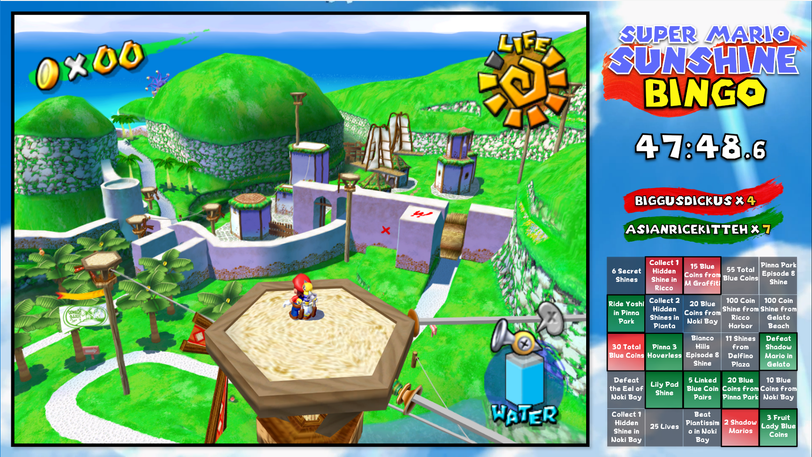

Contact me!alec.grant@rutgers.edu | (732) 890-4220I am a tools and application developer well versed in C# with WPF and C++ with Qt. I would love to work on building UI/UX that integrates the needs of your userbase into a seamless, responsive interface or develop tools to help your company excel with its unique needs. I am also interested in working on Android mobile application development, game development, and Linux application development. Please feel free to use the email address listed above or the contact form below to get in touch with me. I look forward to hearing from you! |
PathfinderC# | WPF | XAMLVisual pathfinding application that implements the A* Search algorithm. GUI built in C# using WPF and custom components with XAML. 
|
Shift Report ToolC# | WinForms | VB | Powershell | SQLReporting form for Rutgers University Office of Information Technology. Employees fill out what duties they performed while on shift in a Windows Form Application written in C# and Powershell. Sends an email to the supervisory team and uploads a copy of the report to an Access database via SQL so supervisors can monitor and run audits on consultant activities. 
|
SMS Bingo ClientC++ | Qt5C++ application that reads from Dolphin's emulated RAM to keep track of in-game statistics and connects players to play Super Mario Sunshine Bingo. GUI built in Qt with custom QWidgets. 
|
MelodyC# | Unity3DMobile rhythm game released on independent game development site. Garnered over 7000 views and over 1000 downloads. Developed in a collaborative setting utilizing git and a kanban workflow. 
|
PathfinderC# | Windows Presentation Foundation
The Pathfinder application is built using C# and Windows Presentation Foundation in Visual Studio with an abundance of custom XAML objects to make creating grids with varied terrain quickly and dynamically. Grid size, start and goal locations, density of nontraversible spaces, and more are options available during runtime. Custom maps can be made by clicking on spaces to toggle whether they are traversible or not. Pathfinding is implemented using the A* algorithm with 3 different distance calculation heuristics available (Manhatten, Chebyshev, or Euclidean). After the path has been calculated, each step is printed on the bottom of the screen, as well as the total steps to complete the path, and the whether the goal space is accessible from teh start space at all. |
Shift Report ToolC# | WinForms | Visual Basic | Powershell | SQL | Microsoft Access

Developed for Rutgers University, Office of Information Technologyconsultant side main screen While working at Rutgers University Office of Information Technology as a lab supervisor, I was tasked with creating a better tool to monitor employee tasks while on shift. Our old system was to have consultants send in a Google Form every 15 minutes with the task they completed since their last round. This created thousands of responses for supervisors to sort through every week which resulted in important information being missed. I pitched for the development of a standalone application more in tune with the specific needs of the labs. Using C# and WinForms in Visual Studio, I developed a client side application that allows consultants to submit their tasks and then compiles them into a timestamped report available for consultants to review throughout the duration of their shift and send once their shift is completed. consultant report Consultants greatly appreciated the ability to review the entirety of their rounds during their shift so they could be sure that they were taking care of all of their required responsibilities. access database Supervisors can access the reports submitted by consultants through a Microsoft Access database. Custom interfaces were developed to make finding specific reports easy and fast. Supervisors were able find information much easier with this new system implemented. While they used to have thousands of rounds to sift through each week, they now were able to see full reports and filter by consultant, date range, location, and more. This dramatically reduced the amount of time supervisors spent reading through reports for important information on the upkeep of the computer labs across campus. Additional organizational information was scraped from various company resources using Powershell and VBA scripts. For the development, documentation, and implementation I completed on this project, as well as the other projects I headed during my time at the University, I was awarded Supervisor Achievement Award in Fall 2017. My immediate supervisors wrote an award letter which can be read in full following the excerpt below. "...he has made major contributions to the Busch Labs. It has been a while since we have had a supervisor who has made such an impact on what we do on a day to day basis. Alec's contributions to the staff this year will be used for many semesters to come. Alec developed a new lost and found tracker and responder for the Busch supervisors, allowing them to send auto-generated e-mails with a few clicks for lost and found. In addition to that, Alec also developed a shift report tool for our Kessler Lab consultants. This tool has been helping our consultants send in more detailed, organized, and standardized shift reports to the supervisory staff versus the previous method. The best aspect of both these projects Alec completed this semester is that he took it upon himself to start and complete both of them. He was not asked to create these tools. Instead, he saw something that could be improved, did it, and then brought it to the staff once he had something to show us. Alec is definitely talented in developing these tools, but the thing that sets him apart is his proactivity and eagerness to find a solution to a potential problem. ..." Award letter |
MelodyC# | Unity Game Engine
Melody was a mobile rhythm game developed for Android in C# via the Unity game engine. I worked collaboratively with two other developers to realize our vision. I was jointly responsible for programming as well as headed UI/UX design, social media, and art direction. To maximize the efficiency of our collaboration, our team used a kanban workflow and made consistent commits to our BitBucket repository. The game was featured on the front page of the independent game development website where we published our demo version, itch.io, and over it's development stage garnered over 7000 page views and over 1000 downloads. Melody is available for download for Android at https://melodygame.itch.io/melody |
Super Mario Sunshine Bingo ClientC++ | Qt5
C++/Qt5 application that hooks into Dolphin's emulated RAM to read values for SMS Bingo. Bingo spaces are not selectable until the proper values have been read from the game's RAM. Once the application sees the correct requirements have been met to allow the player to select the corresponding bingo space, the space turns red. The player can then select the space themselves. The application can also immediately select the corresponding space automatically once the requirements have been met. No changes to Dolphin have to be made for this to work - the program does all the work hooking to Dolphin itself. This project is currently in development and is intended to have online multiplayer as well as a spectator client that allows for a detailed look at what each player has acquired over the course of the bingo game. This application is also intended to work with the Wii's USB port so people can play over console and cross platform (console/Dolphin). |